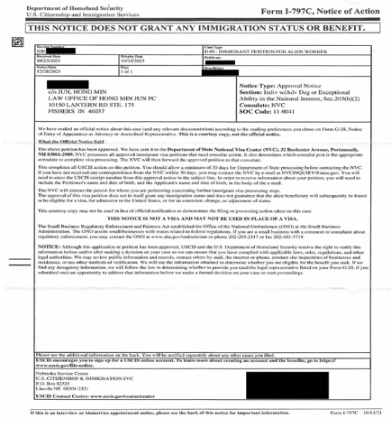

NIW Success Story - Architect
NIW Success Story: A Construction Inspector Specializing in Passive House Energy-Efficient Hospital Projects
One of our recent success stories involved a talented construction inspector from Pakistan, who made significant contributions to the development of energy-efficient construction practices in the U.S. by applying Passive House principles. Although this client did not have publications or award recognitions, his extensive experience in Passive House projects, particularly in overseeing the construction of hospitals, became a decisive factor in proving his contribution to U.S. national interest.
The Journey
This client earned a master’s degree in construction management from a prominent U.S. university and quickly immersed himself in advanced projects that specialized in Passive House construction, a highly energy-efficient building standard that drastically reduces energy consumption.
His work took on national significance as he led projects applying Passive House principles to hospitals. Hospitals, with their 24/7 operations and complex systems, demand high energy consumption. Implementing Passive House technology in such an environment was a challenge, but he successfully supervised the construction of multiple hospitals, significantly reducing energy consumption while maintaining the quality of medical services.
Contribution to National Interest
Passive House construction is still a developing field in the U.S., particularly in large-scale public infrastructure like hospitals. This client’s expertise filled a crucial gap by helping American construction companies adopt these sustainable building techniques, aligning perfectly with the U.S. government’s goals of reducing energy usage and promoting sustainable infrastructure.
As energy costs continue to rise, the healthcare sector requires buildings with high performance. His work addressed this critical need, playing a vital role in spreading Passive House technology across the U.S. construction market, especially in high-demand environments like hospitals.
Challenges Overcome
While the client did not have formal publications or awards, we focused on highlighting his extensive experience and the tangible impact of his work. The reduction in operational costs and environmental footprints in hospitals demonstrated that his contributions were not only innovative but essential to the public interest.
We emphasized his role as a key figure in pushing the boundaries of sustainable construction and showed how his work in hospital construction had nationwide implications, particularly in light of the U.S. government's initiatives to advance energy efficiency and green building practices.
The Result
USCIS approved his National Interest Waiver (NIW) application, recognizing that his work in advancing energy-efficient, Passive House-compliant healthcare buildings was of national importance. His unique skills and contributions to sustainability in hospital construction extended beyond individual companies and projects, impacting the entire U.S. construction industry and healthcare infrastructure.
This success story demonstrates that specialized expertise and tangible contributions are critical elements in winning an NIW case, even without traditional forms of recognition like publications or awards.
